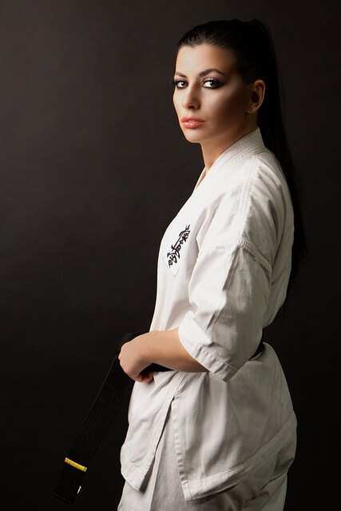

About Us
Koryo Warriors Taekwondo is a club which aims to bring out the best in you! The instructor is very enthusiastic about taekwondo and will push you to reach your goals. We will teach you a series of patterns as well as techniques for self-defence and sparring. During our classes you will make new friends and work along them. You will learn from your seniors and also be given the chance to instruct your juniors as we believe that learning from each other brings out many benefits.
So why study taekwondo?
Increase confidence and self-esteem:
Throughout your taekwondo journey, you will learn a variety of patterns and techniques. Naturally, mastering a technique will give you a confidence boost as you are feeling good that you accomplished something. Also knowing how to defend yourself in a tough situation can also increase your self-esteem.
Physical health:
We will often be doing training to increase endurance such as circuits and sparring during our sessions so while it's not the same as other cardio-centric sports, it will be sure to get your blood pumping and increase cardiovascular health.
Mental Health:
Not only will taekwondo help your cardiovascular health but it will also bring benefits to your mental health. Exercise releases serotonin, which bring feelings of happiness and joy. Training can also give you an outlet to release your stress through all the kicking and punching!
Social activity:
Learning taekwondo is a great way to get out of the house and meet new people. As you are constantly working alongside your peers, you will naturally become closer together as you go through your taekwondo journey together.
Focus and self-discipline:
learning a new pattern or move can require a great deal of focus. There is a lot of repetition when trying to master everything. This takes time so students have to have the self-discipline if they want to perfect a certain move.
Does this sound interesting? We hold different classes for children, women or mixed classes. We train people of all ages and level of skill so there is always a class to suit you!
Your first class is free!

I absolutely love these classes. Everyone is so friendly and you you get a great workout!
- Anna
Gabriella is a really patient instructor and works with you to make sure you have the techniques down
- Jason

About Me
Instructor
Gabriella Madron III Dan
My name is Gabriella, I have been training in taekwondo for over 10 years and am now a 3rd Dan Black belt. Ever since starting taekwondo I have been very passionate about it and during training sessions I give it my all. My goal is to teach others the benefits of taekwondo and help those around me grow.
I am registered to be an instructor with the British Taekwondo Council as well as being first-aid certified.
I look forward to working with you